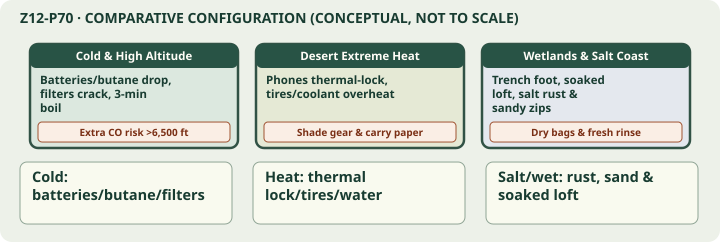

Z12-P70 · Extreme environments · New manuscript
Compare equipment failure thresholds across bitter cold, extreme heat, altitude and salt
Anticipate how extreme environmental stress shifts equipment failure modes across all climate zones.
When it applies · Packing and auditing field gear before transitioning between winter, desert, alpine, wetland or coastal trips.
Equipment · Environment-matched gear audit checklist and redundant low-tech backups.

Actions
- Audit power, hydration and fuel against climate extremes: bitter cold drains batteries/butane and cracks wet filters; desert heat triggers phone thermal shutdown and tire/coolant failure; high altitude cuts boiling temp (3 min >6,500 ft) and increases stove CO.[W28, W02, C05, X07]
- Audit fabrics, fasteners and metals: wet marshes drive trench foot and soak down loft; coastal salt spray pits carbon steel and windblown sand jams zippers and stove jets; UV desert sun degrades nylon and plastics rapidly.[X13, K04, X07, E20]
- Carry at least one zero-battery, low-tech backup matched to the specific environment (paper map + compass, foam pad, storm matches/ferro or boiling pot, wide-mouth bottles) so one climate failure never cascades into rescue.[E02, W26, K07]
Failure recognition · Bringing an unchanged fair-weather three-season backpacking kit into a −10°F winter plain, a 112°F desert canyon or a salty rocky coast.[E02, W28, X07, K04]
Verify · Check every critical subsystem (shelter, insulation, water, navigation, comms) against the target environment's primary failure mechanism before departure.[E02, ED]
Stop or change course · Never commit to an extreme environment with untested or single-point-failure gear unsuited to the forecast temperature, humidity, elevation or salinity.[E02, E20]
Evidence and editorial notes
- C05 · CPSC · Portable Heaters and Camping Equipment (current web edition)
- Section: Carbon monoxide poisoning from portable camping equipment · Conditions: Tents, campers, vehicles and other enclosed spaces
Support: Fuel-burning camping equipment can lead to fatal carbon monoxide buildup in enclosed spaces.
Limitations: High altitude increases incomplete combustion and CO production. · Conflicting evidence: None; aligns with CDC-CO and NPS guidance.
Editorial note: Hard-stop prohibition against indoor/vestibule/tent combustion. · Specialist reviewer: Carbon monoxide safety and emergency medicine
Primary source · checked 2026-11-24 - E02 · NPS · Ten Essentials (current web edition)
- Section: Navigation; insulation; emergency shelter; emergency food and water · Conditions: Outdoor trips; adjust kit to season and route
Support: Carry essential systems including navigation, insulation, light, water and emergency shelter.
Limitations: Carrying items without practice or cold-weather verification does not ensure readiness. · Conflicting evidence: None; baseline kit system architecture.
Editorial note: Supports failure-mode packing and kit verification cards. · Specialist reviewer: Field education and search and rescue
Primary source · checked 2026-11-24 - E20 · NPS · Camping: What to Bring (current web edition)
- Section: Camping: What to Bring > Shelter and Sleep System · Conditions: Overnight camping across three-season and cool conditions
Support: Match tent/tarp, groundsheet, sleeping pad, and sleeping bag ratings to expected night lows and precipitation; test pitching and inspect poles, zippers, and stakes before departure.
Limitations: Manufacturer comfort ratings assume dry insulation, ground pad use, and adequate caloric intake. · Conflicting evidence: None; reinforces pre-trip inspection and dry-sleep separation.
Editorial note: Anchors manufactured shelter selection, groundsheet fit, and gear readiness. · Specialist reviewer: Shelter equipment and field education
Primary source · checked 2026-11-24 - K04 · USDA Forest Service · Handtools for Trail Work (0523-2810-MTDC) (agency handbook)
- Section: Sharpening, Filing and Handle Maintenance · Conditions: Maintaining cutting edges and wood tool handles in field or shop
Support: Secure the tool firmly before filing or honing, keep fingers behind file guards, preserve factory bevel geometry without overheating steel and replace loose or cracked handles rather than taping them.
Limitations: Field touch-up honing does not correct chipped, cracked or heat-annealed steel blades. · Conflicting evidence: None; separates routine edge maintenance from unsafe handle patching.
Editorial note: Guides sharpening, rust prevention and handle-failure retirement cards. · Specialist reviewer: Tool maintenance and forestry safety
Primary source · checked 2026-11-24 - K07 · NPS · Ten Essentials (current web edition)
- Section: Repair Kit and Tools · Conditions: Field equipment repair during backcountry travel
Support: Carry a route-appropriate repair kit (duct/gear tape, multi-tool, cordage, patch supplies) matched to shelter, pack, stove and water gear; verify compatibility before departure.
Limitations: Field patches restore temporary function and do not restore full original storm or load ratings. · Conflicting evidence: None; aligns with E02 and E20.
Editorial note: Grounds field-repair kits, temporary patches and equipment failure limits. · Specialist reviewer: Field equipment safety
Primary source · checked 2026-11-24 - W02 · CDC · How to Make Water Safe in an Emergency (2024-09-19)
- Section: Boil > Steps for boiling water · Conditions: Microbiologically suspect water with acceptable chemical source; portable heat and safe vessel
Support: Clarify cloudy water first. Rolling boil for one minute; above 6,500 feet for three minutes. Cool and cover in sanitized containers.
Limitations: Does not remove dissolved metals, nitrates, fuel, or cyanotoxins. · Conflicting evidence: Older Track B B009 omitted the 6,500 ft threshold; CDC threshold governs.
Editorial note: Require explicit timer verification after rolling boil starts. · Specialist reviewer: Drinking-water safety and public health
Primary source · checked 2026-11-24 - W26 · NPS · Two Ways to Purify Water (current web edition)
- Section: Two Ways to Purify Water · Conditions: Backcountry water treatment planning in National Parks
Support: Boiling and chemical/filtration methods each have fuel, time, weight, and organism-coverage trade-offs; match the primary method and backup to route conditions and follow directions.
Limitations: Does not resolve chemical spills or algal toxins. · Conflicting evidence: Aligns with CDC-T altitude and parasite limits.
Editorial note: Supports primary-plus-backup water treatment selection in Z04. · Specialist reviewer: Backcountry water safety
Primary source · checked 2026-11-24 - W28 · CDC · Water Treatment Options When Hiking, Camping, or Traveling (current web edition)
- Section: Water Treatment Options > Freeze Damage and Maintenance · Conditions: Hollow-fiber and ceramic filters used in freezing or near-freezing temperatures
Support: Freezing water inside a wet filter element can crack hollow fibers or ceramic pores invisibly, allowing untreated water to bypass the barrier; keep wet filters above freezing or replace suspect elements.
Limitations: Internal crack failure often shows no visible external leak. · Conflicting evidence: None; critical cold-weather filter failure mechanism.
Editorial note: Drives cold-weather filter protection and failure-recognition cards. · Specialist reviewer: Drinking-water treatment and cold-weather operations
Primary source · checked 2026-11-24 - X07 · NPS · Death Valley Safety (Desert Travel and Heat) (current web edition)
- Section: Death Valley Safety > Desert Heat, Dehydration, Flash Floods and Vehicle Breakdown · Conditions: Arid desert travel, canyon country and extreme summer heat
Support: Desert heat accelerates fluid and electrolyte loss rapidly, temperatures inside parked vehicles spike to fatal levels within minutes, dry washes flash-flood from distant storms and staying with a disabled road vehicle is generally safer than walking into extreme heat.
Limitations: Cell service is widely absent across desert basins; water needs can exceed 1 gallon/day dramatically during heat. · Conflicting evidence: None; aligns with CDC-HEAT and NWS-HEAT.
Editorial note: Core desert-environment evidence across Z12 heat/arid cards. · Specialist reviewer: Desert safety and emergency medicine
Primary source · checked 2026-11-24 - X13 · NPS · Wetlands Subject Guide (current web edition)
- Section: Wetlands > Footing, Immersion, Insects and Water Quality · Conditions: Travel near marshes, swamps, fens and slow-water estuaries
Support: Wetlands combine wet-cold immersion risk, concealed snags, unstable muck that drains energy rapidly, insect-borne disease exposure and high-organic/stagnant water requiring strict treatment or alternate sourcing.
Limitations: Footwear immersion and trench-foot/cold injury occur even in mild temperatures during prolonged wetland exposure. · Conflicting evidence: None; complements EPA-WETLAND and W16.
Editorial note: Grounds wetland navigation, foot-care and cold-wet exposure cards. · Specialist reviewer: Wilderness safety and wetland operations
Primary source · checked 2026-11-24
Source lineage · NPS Ten Essentials, NWS safety and CDC water; new manuscript · Classification · New manuscript.